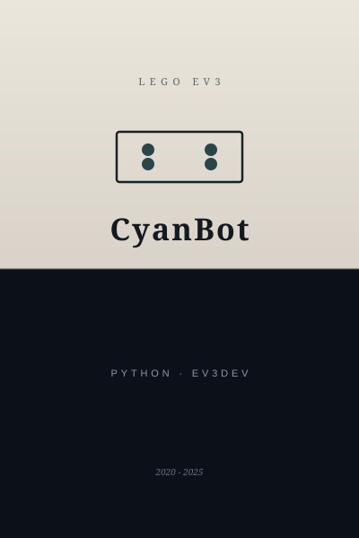

第一景 · Scene I
Lego Mindstorms EV3 (CyanBot)
Mar 2020 - May 2025
Python · ev3dev · webcam tooling · public repo
Open-source EV3 work on GitHub: Python on the brick, guides for EV3DEV, VS Code, fswebcam, and display paths so a USB webcam talks to the EV3. Active development wound down around May 2025; the repo remains the record.
- Docs, modules, reproducible setup.
- Linux on the brick, real hardware limits.